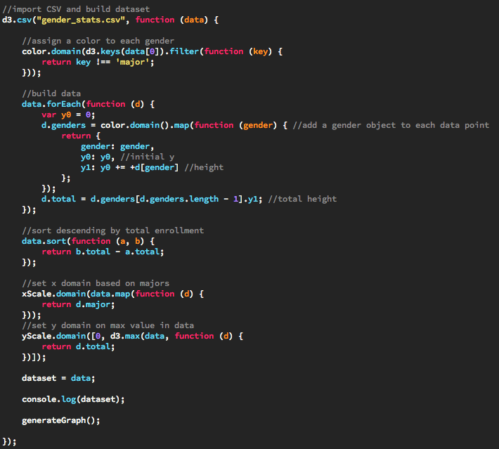
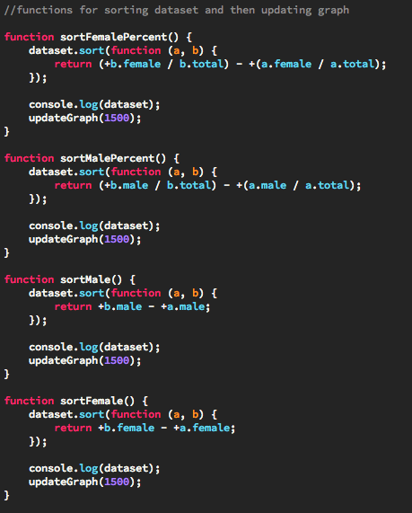
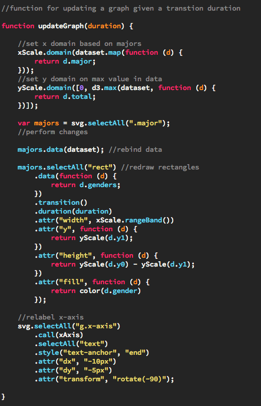

The data for this chart is from the Iowa State University Registrar's enrollement report for Fall 2015. A PDF version can be found here.
Data in D3 can come from a variety of sources. The simplest way to define data is a simple JavaScript array. However what if your data source is a large Excel document? D3 prepared for that eventuality by making it easy to import data into a dataset from many different file types. If you are in Excel you can easily export a CSV file and use D3 to form it into a JavaScript dataset. Here is how we imported a CSV file into our stack chart:
Other files types such as TSV and JSON are also supported. In fact, we will look at importing geoJSON in our Choropleth Map example. However, our data for the stack chart was fairly simple and was already available in the form of an Excel document so CSV suited us better here.
Sorting data in D3 is also very easy. The sort() method allows you to define a custom comparator to use when sorting the dataset. Our example chart sorts in descending order using four different data comparisons. You can sort by the percentage of female or male students, or you can sort by the total number of female or male students. Here is the code which is used:
Updating data is unfortunately one of the more annoying things to try to do in D3. In order to update data, one must first change their dataset and then rebind it to the chart. Then, for every element, that is changing, you must redefine its attributes. In our stack chart example, that means we need to reset the domains for x and y, redraw the rectangles, and re-label the x-axis. If you make drastic changes to dataset, you may have to essentially remake your graph from scratch each time. When defining changes to your chart, you can also add transition animations, which were discussed in our simple bar chart example.
